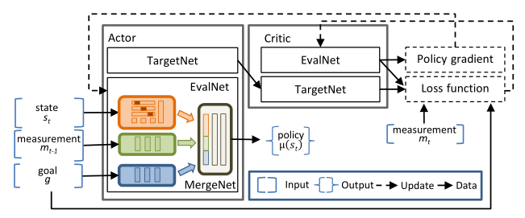
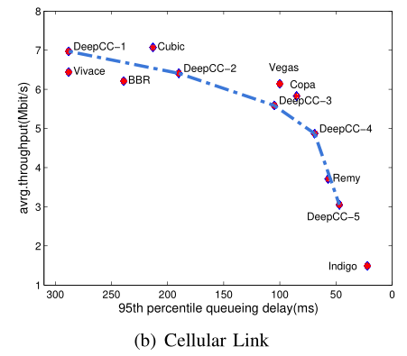
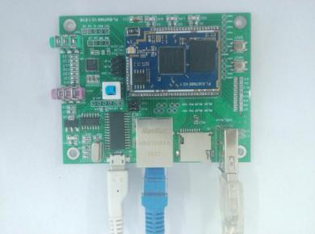
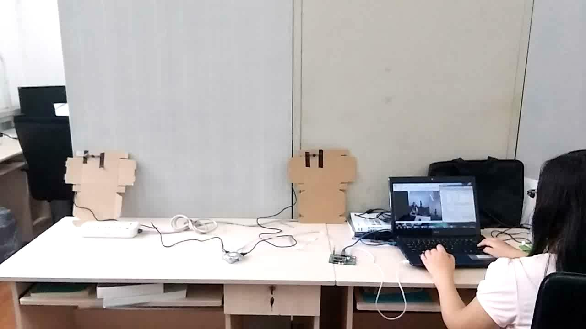
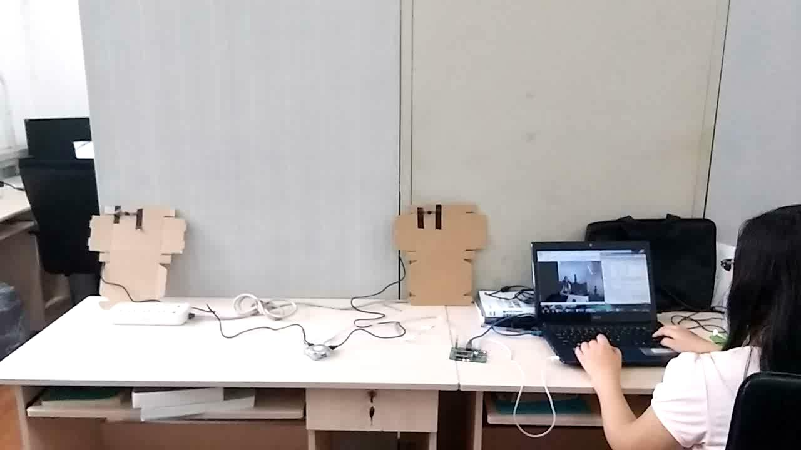
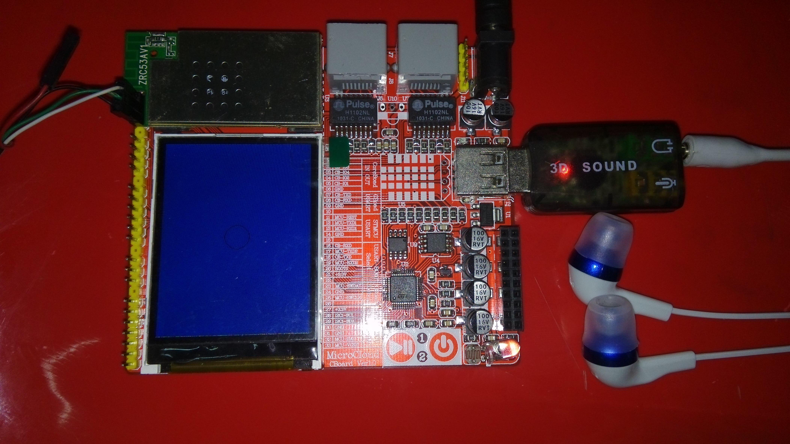
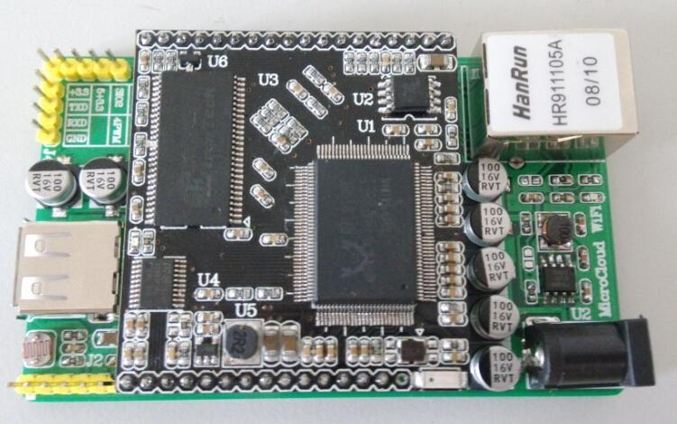

Jing Liu
A mind who enjoys reading, thinking, imagining and trying
Contact: liujingbbd@gmail.com
Hi, welcome! I am Jing, a third-year Master student of Institute of Network Technology, Beijing University of Posts and Communications, also a member of Next Generation Internet Laboratory at Tsinghua University since 2015, advised by Prof. Yong Cui. I am broadly interested in networking, systems and security, with a strong emphasis on the intersection with machine learning, deep learning and reinforcement learning. My recent research focuses on multiobjective TCP congestion control with deep reinforcement learning.
Before joining BUPT, I got my Bachelor's degree in Communication Engineering from Harbin University of Science and Technology in 2016. I was a member of Embedded System Lab during 2013-2016, advised by Prof. Dongming Li. I was and still am obsessed with embedded system and hardware, mainly about operating system of wireless router and network interface card (NIC). Particularly, I feel fortunate to be a student and also a friend of Prof. Li, and I am grateful that he encouraged me to challenge myself to reach new heights.
Research & Project Experience
Research Assistant (Advisor: Prof. Yong Cui)
October 2015 - Present
TCP Congestion Control + Deep Reinforcement Learning
 
Security + Machine Learning
Based on my review and learning experience, my answer of "How many research in Security and Machine Learning?" on zhihu (it's Chinese and similar to Quora) gets the most of likes of this question. I am honored so many people think it is useful.
Data Center Networking + Deep Learning
Project Assistant (Advisor: Prof. Dongming Li)
May 2014 - June 2016
Video Fusion of Two Cameras Based on Embedded System
Built the system and function based on operwrt_widora system, opencv, ffmpeg, ffserver so that we can watch the fusion video of two cameras connected to the board via web.
My Bachelor thesis was based on this project.

 

Internet radio based on wireless router
A funny widget based on openwrt system, which can be
used to listen to Internet radio via an embedded development board and a sound card. I compiled the kernel,
made the driver and fixed it to a fixed-point decoding algorithm.

An IoT platform based on RTL8196C (a NIC)
It’s a commercial product incubated from laboratory for the education of embedded system, its product life was during 2015 - 2018 that you can buy it on Taobao. My advisor Prof. Li developed its hardware, and I developed its software system & applications based on RTL8196-SDK (kernel source code), including kernel, driver, tcp/udp communication with cloud and so on, and wrote a mannul to help more people learn embedded system better.

Other Experience
Teaching Assistant
Innovation and Entrepreneurship in the Internet Era, Prof. Yong Cui, Tsinghua University
Researched examples and prepared resources for book, PPT, MOOC and assignments.
Admission Committee Assistant
Network Research Institute, Prof. Yong Cui, Tsinghua University
Prepared tests for Ph.D. applicants and assisted in interviewing them.
Administrative Assistant
State Key Laboratory of Networking and Switching Technology, Mentor Min Xie, Beijing University of Posts and Telecommunications
Assisted in managing scientific research projects, achievements and funding.
Tujing Navigation App
A mobile application project for intelligent tourist-map navigation and recommendation, Tsinghua University
Joined a brilliant startup team of Tsinghua University with this project, and played the role of product researcher & manager and marketing promoter.
Teaching Assistant
Project Design of Embedded System, Prof. Dongming Li, Harbin University of Science and Technology
Assisted in preparing experiments and bringing first-hand experience for students.
Service: Review (under my advisor's instruction) for
IEEE Communications Magazine, Chinese Journal of Computers, and International Conference on Mobile Ad-hoc and Sensor Networks.
Honors & Awards
- 2nd Place of Table Tennis Team Competition in the Institute of Network Technology of BUPT (2018)
- The Best Debater of the First Debate Contest in the Institute of Network Technology of BUPT (2017)
- University Scholarships of HUST for 4 consecutive years (2012-2016)
- A 3-year honor of HUST Merit Student (2012-2015)
- National Scholarship for Encouragement, Ministry of Education ( 2015)
- 2nd Prize of National Undergraduate Mathematical Contest in Modeling (2015)
- 2nd Prize of Undergraduate Electronic Design Contest in Heilongjiang Province (2014)
- 1st Prize of Mathematical Modeling Competition in the Northeast of China (2014)
- 1st Prize of the Chinese Mathematics Competitions in Heilongjiang Province (2013)
- 1st Prize of Computer Games Programming Contest in Harbin University of Sci. & Tech. (2013)
Miscellaneous
I come from Guang'an, Sichuan, China, and graduated from Sichuan Guang'an Middle School which is famous for the alma mater of Deng Xiaoping. I was born and raised in Sichuan, and has been to Harbin, Heilongjiang, for four years to attend university, which sharpened my ability of being fearless with extremely hot as well as cold, and tolerating far distance.
I experienced HUST, BUPT and Tsinghua University, three kinds of educational environments, which enables me to reflect on education and self learning, motivation and self value.
When I am alone, I enjoy most of my time sleeping and eating (for body), reading and listening (for mind and future). When being with colleagues of lab, I like skiing in winter, and mountaineering in spring. When being with my roommates (Nana, Linlin and Yueyue), I enjoy taking nice photos of them and myself during the wonderful months here in Beijing.
I love detective movies and television shows, like Prison Break, Day and Night, also enjoy watching nerdy The Big Bang Theory. Plus, I love playing table tennis. Unfortunately, I don't have enough time to do these things.
Collections
This part is reserved for useful things during my learning process.